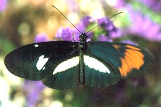

Lawrence E. Gilbert's interspecific Heliconius gynandromorph
The photo shows a laboratory-reared gynandromorph Heliconius cydno x H. melpomene interspecific hybrid.

(© Lawrence E. Gilbert, jr., 2001)
Back to: Artificial
hybrids ...
Back to: Hybridization document
Back to: Jim
Mallet Home Page